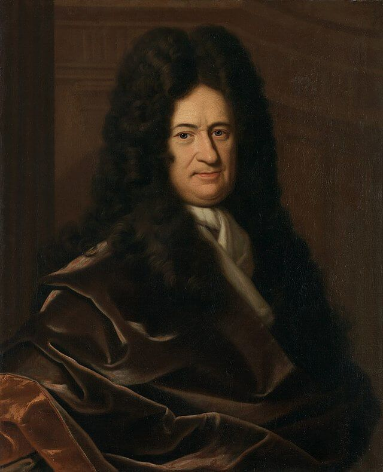

Who Was Gottfried Wilhelm Leibniz?
Gottfried Wilhelm Leibniz (1646–1716) was a German philosopher, mathematician, logician, jurist, diplomat, and one of the most important thinkers of the late seventeenth and early eighteenth centuries. His philosophy belongs to the tradition of early modern rationalism, alongside thinkers such as René Descartes and Baruch Spinoza. Leibniz developed an ambitious and highly systematic philosophy concerned with reality, God, knowledge, substance, causation, freedom, logic, and the fundamental structure of the universe.
Leibniz is particularly famous for his theory of monads, his Principle of Sufficient Reason, his theory of possible worlds, and his doctrine of pre-established harmony. He argued that reality ultimately consists not of independently existing pieces of extended matter, but of simple and active substances possessing perception and appetition. His metaphysics attempted to explain how the apparently unified and interconnected world of experience could arise from these fundamental substances.
A central feature of Leibniz's philosophy was his belief that reality is intelligible and governed by rational principles. The Principle of Sufficient Reason expresses his conviction that there must be a reason why things are as they are rather than otherwise, even when human beings are unable to discover that reason. This principle influenced his theories of truth, causation, God, possible worlds, and the rational order of nature.
Leibniz was also an extraordinary mathematical and scientific thinker. He independently developed differential and integral calculus during the same general historical period as Isaac Newton and made important contributions to symbolic logic, mathematics, physics, jurisprudence, and intellectual history. He also pursued the idea of a formal system of reasoning through which complex arguments might eventually be analyzed with something approaching mathematical precision.
His intellectual interests were remarkably wide, and his philosophy cannot be separated completely from the broader scientific revolution and political world of early modern Europe. Leibniz sought connections between philosophy, science, mathematics, theology, and practical knowledge. For this reason, he is often regarded as one of the last great universal thinkers—a philosopher whose work attempted to construct a unified understanding of knowledge and reality across many different disciplines.
Gottfried Wilhelm Leibniz: Quick Facts
- Full name — Gottfried Wilhelm Leibniz
- Born — 1646, Leipzig, Saxony
- Died — 1716, Hanover
- Philosophical tradition — Early modern rationalism
- Major philosophical subjects — Metaphysics, epistemology, logic, philosophy of mind, theology, ethics, and philosophy of science
- Famous concept — Monads
- Major principle — Principle of Sufficient Reason
- Other principle — Identity of Indiscernibles
- Important doctrine — Pre-established harmony
- Major philosophical works — Monadology, Discourse on Metaphysics, Theodicy, and New Essays on Human Understanding
- Mathematical achievement — Independent development of differential and integral calculus
Leibniz's Early Life and Historical Background

```Leibniz was born in Leipzig in 1646 during a period of profound intellectual, religious, and political transformation in Europe. The Thirty Years' War had only recently ended, while the Scientific Revolution was challenging inherited Aristotelian conceptions of nature. New mathematical methods, astronomical discoveries, and mechanical explanations were transforming how educated Europeans understood the physical universe and humanity's place within it.
Leibniz displayed an unusually broad intellectual curiosity from an early age. After the death of his father, who had been a professor of moral philosophy, he gained access to an extensive personal library and read widely in ancient and modern literature. He studied at the University of Leipzig and later at the University of Altdorf, receiving advanced training in philosophy, law, and related fields.
His professional life extended far beyond academic philosophy. Leibniz worked as a jurist, diplomat, historian, librarian, political adviser, and administrator while continuing his investigations into mathematics, science, theology, language, and logic. This extraordinary range of interests reflected an early modern ideal of knowledge in which the boundaries between disciplines were considerably less rigid than they are today.
Leibniz's philosophical development was influenced by both ancient and modern traditions. He studied Aristotle and medieval Scholastic philosophy while engaging critically with the ideas of Descartes, Hobbes, Spinoza, and other representatives of the new philosophy. His mature system can therefore be understood partly as an attempt to preserve insights from traditional metaphysics while responding to the scientific and philosophical problems of the seventeenth century.
Throughout his life, Leibniz pursued the possibility of intellectual and political reconciliation. He hoped that reason, scholarship, and improved communication might help overcome divisions between nations, churches, and systems of thought. This broader ambition helps explain the remarkable unity of his work: mathematics, logic, metaphysics, theology, and practical projects were all connected by his belief that reality and knowledge possess an underlying rational order.
Leibniz and the Scientific Revolution
Leibniz lived during the Scientific Revolution, when European thinkers increasingly used mathematics, observation, and mechanical explanation to understand nature. The achievements of Galileo, Descartes, Huygens, Newton, and other scientists transformed the intellectual environment in which Leibniz developed his own philosophical system. Nature increasingly appeared to be governed by discoverable laws rather than explained solely through traditional Aristotelian categories.
Leibniz accepted many important features of the new scientific approach, particularly the importance of mathematical reasoning and systematic explanation. His own work made major contributions to mathematics and mechanics. Yet he believed that a purely mechanical description of bodies and motion could not provide a complete account of reality, because it left deeper questions concerning force, activity, unity, and substance unresolved.
This concern led Leibniz to criticize the idea that matter understood simply as extension could constitute the ultimate foundation of reality. Physical science may successfully describe how bodies behave, but Leibniz asked what makes a body a genuine unity and what provides the internal principle behind activity and change. These questions required, in his view, a metaphysical analysis that went beyond the descriptions provided by mathematics and physics alone.
Leibniz consequently developed a philosophy in which the physical world and its scientific description were grounded in a deeper metaphysical order. Bodies are important objects of scientific investigation, but they are not simply identical with the ultimate constituents of reality. His theory of simple substances attempted to explain how genuine unity and activity could exist beneath the complex and divisible world described by physical science.
His relationship with the Scientific Revolution was therefore neither a rejection of modern science nor an attempt to replace science with metaphysics. Leibniz sought a broader philosophical framework in which scientific explanation could coexist with questions about ultimate reality, causation, possibility, and God. His work represents one of the most ambitious attempts to connect the new mathematics and science with a comprehensive metaphysical system.
Leibniz and Rationalism
Rationalism is one of the central traditions of early modern philosophy, and Leibniz is commonly regarded as one of its greatest representatives. Rationalist philosophers emphasized the power of reason in acquiring knowledge and explaining reality. Leibniz placed particular importance on necessary truths, logical principles, mathematics, and the conviction that reality is fundamentally intelligible.
Leibniz did not believe that all human knowledge arises independently of experience. Experience is essential for discovering contingent facts about the world and for providing the occasions through which many ideas become explicit. Nevertheless, he rejected the view that the mind is simply a passive recipient of sensory impressions, arguing instead that the intellect possesses its own principles and capacities.
His rationalism is especially visible in his distinction between necessary truths and contingent truths. Necessary truths, such as fundamental truths of logic and mathematics, are grounded in reason and cannot be otherwise without contradiction. Contingent truths concern the particular world that actually exists and require explanation through the reasons and circumstances that make them true.
Leibniz also defended a sophisticated account of innate ideas. He did not simply claim that the human mind consciously contains complete pieces of knowledge from birth. Instead, he described the mind as possessing dispositions and capacities through which rational truths can be recognized. His famous comparison of the mind to veined marble suggests that experience may reveal and develop tendencies already present within our rational nature.
More broadly, Leibniz's rationalism expresses confidence that reality is not ultimately an accumulation of unexplained facts. The principles of contradiction and sufficient reason represent his conviction that truth and existence are governed by rational structures. This commitment to intelligibility unites his work in metaphysics, epistemology, logic, mathematics, and philosophical theology.
What Was Leibniz's Philosophy?
Leibniz's philosophy is a comprehensive rationalist system concerned with substance, reason, possibility, causation, knowledge, and divine intelligence. Rather than developing a single isolated theory, Leibniz attempted to show how different philosophical questions could be connected within one coherent account of reality. His mature philosophy brings together metaphysics, logic, theology, mathematics, and the theory of mind.
At the center of his metaphysics is the claim that reality ultimately depends upon simple substances called monads. These are not physical atoms or miniature pieces of matter. A monad is a metaphysical unity characterized by perception and activity. Leibniz believed that genuine substances must possess an internal principle through which their states develop rather than being merely passive collections of externally connected parts.
Leibniz also believed that every genuine fact has a reason for being the way it is. This conviction is expressed through the Principle of Sufficient Reason, one of the most important principles in the history of metaphysics. Alongside it, Leibniz emphasized the principle of contradiction and developed important ideas concerning identity, continuity, possibility, truth, and perfection.
God occupies a central position in this philosophical system. Leibniz argued that God possesses infinite understanding, power, and goodness and comprehends all possible worlds. The actual world is not treated as metaphysically necessary in itself; rather, Leibniz explains its existence through God's free and rational choice. This connects his metaphysics with questions concerning contingency, freedom, morality, and the problem of evil.
The remarkable ambition of Leibniz's philosophy lies in its attempt to explain how a universe composed of individual substances can nevertheless display unity, order, and intelligibility. His doctrines of monads, sufficient reason, possible worlds, and pre-established harmony were all developed to address different aspects of this larger philosophical problem.
What Is Leibniz's Metaphysics?
Leibniz's metaphysics investigates what ultimately exists, what makes something a genuine substance, and how the apparently physical world is grounded. He rejected the idea that extension alone could provide the ultimate nature of substance. For Leibniz, something genuinely substantial must possess unity and an internal principle of activity rather than being merely an aggregate of externally related parts.
This concern led him toward the theory of simple substances known as monads. A monad cannot be physically divided because it is not an extended material object. Leibniz describes monads as metaphysical centers of perception and activity, each possessing its own internal development. Their simplicity is therefore metaphysical rather than spatial: they do not occupy space as tiny physical particles.
Leibniz's metaphysics also challenges ordinary assumptions about causation. Individual monads do not exchange physical influences in the most basic metaphysical sense. Each develops according to its own internal principle while corresponding with the development of every other substance. The apparent coordination of the universe is explained through his doctrine of pre-established harmony.
Bodies and physical objects nevertheless remain important within Leibniz's philosophy. His metaphysical account does not simply deny the world studied by physics. Instead, he distinguishes the ultimate metaphysical level of simple substances from the phenomenal and organized world of bodies. Questions about exactly how Leibniz understood the relationship between monads and physical phenomena remain important subjects of scholarly interpretation.
Leibniz's metaphysics consequently combines theories of substance, perception, causation, identity, possibility, and God. His system is far broader than the simplified claim that reality consists of tiny spiritual particles. The theory of monads forms part of a larger attempt to explain why reality possesses unity, individuality, order, and rational intelligibility.
What Are Leibniz's Monads?
Monads are the most famous concept in Leibniz's metaphysics. A monad is a simple substance, meaning that it has no physical parts and therefore cannot be divided into smaller components. Unlike an atom in modern physics, however, a Leibnizian monad is not a tiny material object occupying a particular region of space.
Leibniz describes monads as centers of perception and appetition. Perception refers broadly to the way a monad represents or expresses the universe from its own perspective. Appetition refers to the internal tendency through which one perceptual state develops into another. Every monad therefore possesses an internal principle of activity and change.
Monads differ according to the clarity and complexity of their perceptions. Some possess only obscure forms of perception, while animals possess sensation and memory. Rational minds possess a higher level of awareness, including the capacity for reflection and knowledge of necessary truths. Leibniz therefore presents reality as containing a hierarchy of different forms of perception and mental activity.
An important feature of monads is that they do not literally exchange causal influences by physically pushing or pulling one another. Leibniz famously describes monads as having no "windows" through which something could enter from outside. Instead, each monad develops according to its own internal nature while remaining coordinated with every other substance in the universe.
This universal coordination is explained through pre-established harmony. God creates each monad with a complete internal principle of development such that its changing states correspond with the changing states of other monads. The theory therefore attempts to preserve the independence of individual substances while also explaining the remarkable order and unity that human beings experience in the world.
Leibniz's Monadology Explained
The Monadology, written in 1714, is one of the clearest and most concise statements of Leibniz's mature metaphysics. Although relatively short, the work presents a remarkably ambitious account of simple substances, perception, activity, causation, God, and the structure of reality. It has consequently become the text most closely associated with Leibniz's philosophical system.
The work begins with the claim that reality contains simple substances called monads. Because a monad has no parts, it cannot arise through the ordinary assembly of smaller components or perish through ordinary physical decomposition. Leibniz therefore treats the existence and development of monads as fundamentally different from the behavior of material objects.
Leibniz distinguishes different grades of monadic perception. Some substances possess extremely obscure perceptions, while animals possess sensation and memory. Rational minds possess reflective awareness and the ability to understand necessary truths. Human beings therefore occupy a distinctive level because rational thought allows them to know universal principles and reflect consciously upon themselves.
The Monadology also explains the relationship between individual substances and the larger universe. Every monad expresses the whole universe, although each does so from its own particular perspective and with a different degree of clarity. This principle allows Leibniz to combine individuality with universality: every substance is unique, yet every substance belongs to one rationally coordinated whole.
God provides the ultimate foundation of this metaphysical order. Leibniz identifies God as the necessary source of created substances and as the being whose understanding contains the rational possibilities from which creation is chosen. The Monadology therefore brings together substance theory, perception, individuality, causation, and philosophical theology within one highly compressed account of reality.
What Is Leibniz's Principle of Sufficient Reason?
The Principle of Sufficient Reason is one of the most important ideas in Leibniz's philosophy. In its broadest form, it expresses the claim that there must be a sufficient reason why something exists, why an event occurs, or why a truth is the case rather than otherwise. Leibniz regarded this principle as fundamental to metaphysics and to the rational investigation of reality.
The principle does not mean that human beings can always discover the reason for every fact. Leibniz recognized that many explanations remain beyond human knowledge. Instead, the principle expresses a deeper philosophical commitment: reality is intelligible, and facts should not ultimately be treated as entirely without explanation merely because the relevant explanation is currently unknown.
Leibniz connects the Principle of Sufficient Reason with his distinction between necessary and contingent truths. Necessary truths are grounded in the Principle of Contradiction; their denial involves contradiction. Contingent truths, by contrast, do not become false through a simple logical contradiction, and their truth requires an explanation of why this particular possibility is actual.
The principle therefore plays an important role in Leibniz's arguments concerning the existence of God and the origin of the world. If the collection of contingent things exists, Leibniz asks why this entire contingent reality exists rather than nothing at all. He argues that the ultimate explanation cannot itself consist merely of another contingent fact and must therefore be grounded in a necessary being.
Leibniz's Principle of Sufficient Reason has remained enormously influential and controversial. Later philosophers have questioned whether every fact must possess an explanation and whether the universe itself requires an ultimate sufficient reason. The principle continues to shape debates about causation, explanation, contingency, cosmology, and the limits of rational inquiry.
Leibniz's Principle of Identity of Indiscernibles
The Identity of Indiscernibles is one of the most famous principles associated with Leibniz's philosophy. In its broadest form, it states that there cannot be two genuinely distinct things that are completely indiscernible from one another, possessing exactly the same properties and relations. If no difference whatsoever could distinguish two supposed things, Leibniz argues that there would be no sufficient basis for treating them as two separate individuals.
This principle is closely connected with Leibniz's theory of individual substances. Every genuine individual possesses its own complete concept and occupies a unique place within the rational structure of reality. An individual is therefore not distinguished merely by its physical location. Its identity includes the complete history and network of predicates that belong to that particular substance.
Leibniz's view also reflects his rejection of the idea that reality could contain perfectly identical substances differing only numerically. He believed that such a duplication would be difficult to reconcile with the Principle of Sufficient Reason. If two things were absolutely identical in every respect, there would appear to be no rational explanation for why one should be located here and the other there, or why both should exist as distinct individuals.
The principle became particularly important in later discussions of space and identity. Leibniz used related arguments in his debate with Samuel Clarke concerning absolute space, suggesting that a universe shifted entirely from one position to another without any internal difference would not represent a genuinely different state of affairs. Such arguments connected questions about individuality with the larger structure of space and reality.
The Identity of Indiscernibles illustrates the close relationship between logic and metaphysics in Leibniz's philosophy. Questions about identity are not merely linguistic questions for him; they concern what it means for something to exist as a genuine individual. The principle remains influential in contemporary debates concerning identity, individuation, possible worlds, and the nature of objects.
What Is Leibniz's Pre-Established Harmony?
Pre-established harmony is Leibniz's explanation of how apparently interacting substances can remain perfectly coordinated without directly causing changes in one another. Each monad follows its own internal sequence of perceptions and states, yet these sequences correspond with one another in an extraordinarily precise order. The universe therefore appears interconnected even though its fundamental substances do not literally exchange causal influences.
The classic example concerns the relationship between the mind and body. When a person decides to raise an arm, the mental event and the bodily movement appear to stand in a direct causal relationship. Leibniz rejects the idea that an immaterial mind physically pushes a material body. Instead, the mental sequence and the bodily sequence develop in perfect correspondence because their harmony was established from the beginning of creation.
Leibniz compared this coordination to perfectly synchronized clocks. Two clocks may display the same time without continuously influencing one another if they have been constructed and arranged to operate in harmony. Similarly, each monad develops according to its own internal principle, but the development of every monad corresponds with the development of all the others.
The doctrine allows Leibniz to preserve the independence and internal activity of individual substances while explaining the remarkable order of experience. What appears at the level of ordinary experience as interaction is, at the deepest metaphysical level, a systematic correspondence between substances. Every monad expresses the universe from its own perspective and develops in a way consistent with the larger order of creation.
Pre-established harmony also provided Leibniz with an alternative to Cartesian interactionism and to occasionalism. The theory became one of the most distinctive features of his philosophy because it attempted to solve the problem of mind and body while also explaining the unity of the universe. It demonstrates how Leibniz's theories of substance, causation, perception, and God are closely connected.
Leibniz's Philosophy of God
God occupies a central position in Leibniz's philosophical system. Leibniz did not treat God merely as an object of religious belief; he regarded the concept of God as essential to explaining why there is a rationally ordered world at all. His philosophical theology is closely connected with his theories of necessity, contingency, sufficient reason, possibility, and the ultimate foundation of existence.
Leibniz developed several forms of philosophical reasoning concerning God's existence. One important line of thought begins with contingent reality. Individual things and the world as a whole do not appear to contain within themselves the complete explanation of why they exist. Leibniz therefore argues that the ultimate sufficient reason for contingent existence must be found in a necessary being whose existence does not depend upon another contingent cause.
Leibniz attributes infinite understanding, power, and goodness to God. Divine understanding encompasses the realm of possible worlds and the different ways reality could consistently exist. Divine wisdom evaluates these possibilities, while divine power makes the chosen world actual. Creation is therefore understood not as an irrational act but as an expression of divine intelligence and rational choice.
His philosophy of God is also closely related to his theory of contingency. Leibniz maintains that the actual world is not logically or metaphysically necessary in the same way as a mathematical truth. Other possible worlds could have existed. The existence of this particular world therefore requires an explanation, which Leibniz ultimately connects with God's free choice guided by wisdom and goodness.
God also provides the foundation for the universal harmony described by Leibniz's metaphysics. The coordination of monads, the rational order of nature, and the intelligibility of reality are ultimately grounded in divine creation. For Leibniz, metaphysics and philosophical theology are therefore deeply connected: understanding the world leads to the question of why this world exists and what provides the ultimate reason for its existence.
Why Did Leibniz Believe This Is the Best of All Possible Worlds?
Leibniz is famously associated with the claim that the actual world is the best of all possible worlds. This idea is frequently misunderstood as the claim that every individual event is pleasant, perfect, or desirable. Leibniz's actual argument is considerably more complex and is connected with his conception of an infinitely wise, powerful, and good God choosing among different complete possibilities for creation.
According to Leibniz, God's understanding contains an immense range of possible worlds. These are complete possible arrangements of reality rather than isolated alternative events. God freely chooses to actualize a world according to divine wisdom, and Leibniz argues that a perfectly wise and good being would have sufficient reason to choose the world possessing the greatest overall perfection.
This does not require every part of the world to be perfect when considered in isolation. A complete world may contain limitation, suffering, conflict, and imperfection while nevertheless possessing the greatest possible richness, order, variety, and harmony as a whole. Leibniz repeatedly emphasizes that human beings observe only limited portions of the total structure of creation and cannot easily judge its complete significance.
The doctrine is closely connected with Leibniz's response to the problem of evil. In his Theodicy, he distinguishes different forms of evil and attempts to explain how the existence of evil can be reconciled with the goodness and power of God. His solution does not deny the reality of suffering; instead, it argues that the creation of a finite world may necessarily involve limitations while the total order of creation remains the best possible.
The doctrine later became famous—and controversial—through Voltaire's satire Candide, which mocked an excessively optimistic interpretation of Leibnizian philosophy. Leibniz's original position, however, is more sophisticated than the phrase "everything is for the best." His argument connects divine wisdom, possible worlds, sufficient reason, freedom, and the philosophical problem of evil in one of the most debated systems of philosophical theology.
Leibniz and the Philosophy of Possible Worlds
Leibniz made the idea of a possible world central to his philosophy of modality. A possible world is not merely another planet or an alternate physical universe existing somewhere in space. It refers to a complete possible way reality could have been—a comprehensive arrangement of things and events that is genuinely possible according to the principles of logic and metaphysical consistency.
This theory allows Leibniz to distinguish carefully between necessity and contingency. Necessary truths could not be otherwise because their denial would involve contradiction. Contingent truths, by contrast, are true in the actual world but do not possess the same logical necessity. Another possible world could contain a different arrangement of contingent events.
Possible worlds also play an important role in Leibniz's understanding of God. Divine intellect comprehends the realm of possibilities, including the countless complete ways in which reality might exist. Creation involves the actualization of one possible world rather than the logical necessity of every possibility. This distinction allows Leibniz to maintain that the actual world is intelligible without claiming that it was the only world that could possibly have existed.
Leibniz also connects possibility with the concept of compossibility. Individual possibilities may each be conceivable in themselves without being capable of existing together within one complete world. A possible world therefore contains a collection of possibilities that can coexist consistently. This idea became an important part of his attempt to explain how God chooses a complete order of creation rather than selecting unrelated individual events.
Leibniz's use of possible worlds became enormously influential in the later history of modal philosophy. Modern philosophers and logicians developed formal systems using possible worlds to analyze necessity, possibility, and counterfactual statements, although contemporary theories often employ the concept in ways that differ significantly from Leibniz's original theological and metaphysical framework.
Leibniz's Theory of Knowledge and Epistemology
Leibniz's epistemology investigates how human beings acquire knowledge and how sensory experience relates to rational understanding. Leibniz rejected the idea that the mind is simply an entirely blank slate upon which experience writes. Instead, he argued that the mind possesses innate dispositions, structures, and principles that make rational knowledge possible.
A central distinction in his theory of knowledge is the difference between necessary truths and contingent truths. Mathematical and logical truths possess a necessity that cannot be derived merely from repeated sensory observation. Experience may show us that something happens in the world, but reason investigates truths whose denial would involve contradiction and therefore could not be otherwise.
Leibniz did not deny the importance of experience. The senses provide essential information about the world and often give the occasions through which intellectual capacities become active. His disagreement with strict empiricism concerns the claim that all the principles involved in knowledge originate solely from sensation. For Leibniz, experience awakens and develops capacities that belong to the rational nature of the mind itself.
His theory of innate ideas should therefore not be understood as the claim that human beings consciously possess complete knowledge from birth. Leibniz often describes innateness in terms of tendencies, dispositions, and potentialities. His comparison of the mind to a block of marble containing veins suggests that experience helps reveal patterns and capacities already present within the structure of rational understanding.
Leibniz's epistemology consequently attempts to combine experience with rational structure. The senses provide access to the particular and contingent world, while the intellect enables human beings to recognize universal and necessary principles. This approach made Leibniz one of the most important defenders of rationalism and helped shape later debates about the relationship between experience, reason, and the active nature of the human mind.
Leibniz vs John Locke: Human Knowledge and Innate Ideas
The philosophical disagreement between Leibniz and John Locke represents one of the major debates in early modern epistemology. Locke argued in his Essay Concerning Human Understanding that human knowledge develops through experience and rejected the doctrine of innate ideas as it was commonly formulated. His empiricism emphasized sensation and reflection as the principal sources through which human beings acquire ideas.
Leibniz responded through his New Essays on Human Understanding, written as a detailed philosophical engagement with Locke's work. Leibniz did not simply claim that the mind contains every idea or piece of knowledge in a fully conscious form from birth. Instead, he argued that the mind possesses innate structures, dispositions, and capacities that enable it to recognize necessary truths when experience provides the appropriate occasion for reflection.
The disagreement can therefore be understood as a dispute about the activity of the mind. Locke's account emphasizes how ideas arise and develop through experience, while Leibniz argues that experience alone cannot explain the necessity and universality of logical and mathematical knowledge. The mind, in Leibniz's view, actively contributes principles that cannot simply be read directly from sensory impressions.
Leibniz's famous alteration of a traditional phrase captures this disagreement. Against the claim that nothing exists in the intellect that was not first in the senses, Leibniz adds an important qualification: except the intellect itself. The point is that sensory experience cannot by itself explain the rational capacities through which experience is organized, compared, and understood.
Their debate became an important part of the larger opposition between empiricism and rationalism, although the historical positions of both philosophers are more complex than these labels sometimes suggest. The disagreement raised enduring questions about the origins of knowledge, the nature of the mind, and whether experience alone can explain humanity's capacity for universal and necessary thought.
Leibniz's Philosophy of Mind and Perception
Leibniz's philosophy of mind is closely connected with his theory of monads. Every monad possesses perceptions, although these perceptions are not all conscious or equally clear. Leibniz therefore presents mental life as containing many levels of awareness and argues that conscious experience emerges from a much larger background of perceptions that do not always become objects of explicit attention.
His concept of petites perceptions, often translated as small or minute perceptions, is particularly important. Leibniz uses this idea to explain how countless perceptions may influence experience without each being consciously noticed. For example, a person hearing the sound of the sea may not separately distinguish every individual wave, even though the overall experience depends upon many small perceptions.
Leibniz distinguishes perception from higher forms of awareness such as apperception. A perception may occur without reflective consciousness, whereas apperception involves awareness of one's perceptions. This distinction allowed Leibniz to develop an early and influential account of unconscious or unnoticed mental activity long before such ideas became central to modern psychology.
Human minds are distinctive because rational reflection allows them to move beyond sensation toward self-awareness and knowledge of necessary truths. Human beings can recognize logical principles, reflect upon themselves, and understand universal relationships. Leibniz therefore treats consciousness, memory, reason, and self-reflection as different levels within a broader hierarchy of mental activity.
His philosophy of mind also challenges the idea that the mental and physical worlds must interact through direct causal contact. The relationship between mental states and bodily processes is explained through pre-established harmony. This makes Leibniz's theory of mind inseparable from his larger metaphysics, in which perception, substance, individuality, and the rational order of the universe form parts of one interconnected philosophical system.
Leibniz on Freedom, Necessity, and Determinism
Leibniz's philosophy of freedom and determinism attempts to reconcile a rationally ordered universe with genuine human freedom. Because every event has a sufficient reason, it might initially appear that everything is strictly necessary and that no alternative could ever have occurred. Leibniz rejects this conclusion by making an important distinction between necessity and contingency.
A contingent action can possess a sufficient reason without its opposite being logically impossible. Leibniz distinguishes truths whose denial involves contradiction from truths that are explained by the particular reasons, inclinations, circumstances, and internal nature of an individual substance. The fact that an action has an explanation does not, for Leibniz, automatically mean that it possesses the strongest form of logical necessity.
Freedom is closely connected with spontaneity, intelligence, and rational action. A free action arises from the internal nature of the agent rather than being imposed as an external mechanical compulsion. Rational beings are capable of acting through understanding and deliberation, even though their actions remain intelligible within the larger rational order of the universe.
Leibniz's account is nevertheless philosophically complex because his theory of complete individual concepts and sufficient reasons gives every individual substance a highly determinate history. He therefore had to explain how actions could be certain or determined in one sense while still remaining contingent and free in another. This distinction became central to his attempt to avoid both absolute fatalism and unexplained randomness.
His philosophy of freedom remains important because it raises a question that continues to shape modern debates: does having a complete explanation for an action make that action unfree? Leibniz's answer was that rational explanation and freedom need not be opposites. A genuinely free action may still have reasons, motives, and an intelligible connection with the character and understanding of the person who performs it.
What Was Leibniz's Philosophy of Ethics?
Leibniz's ethics is closely related to his philosophical theology and his conception of rational perfection. Unlike philosophers who constructed a single, separate ethical system, Leibniz's moral ideas are distributed across his writings on justice, happiness, God, human nature, and political life. He generally understood goodness in relation to perfection, rational order, and the flourishing of intelligent beings.
Leibniz associated happiness with the perfection of the mind and the rational pursuit of the good. Human beings become more perfect when their understanding expands and when their actions become increasingly guided by reason and benevolence. Knowledge therefore possesses an ethical importance: improving our understanding can also improve the way we act toward ourselves and toward other rational beings.
Justice and benevolence were important themes in Leibniz's moral thought. He connected justice with a rational concern for the good and happiness of others and rejected the idea that morality could be reduced simply to arbitrary commands or personal advantage. Ethical life involves recognizing that rational beings exist within a broader order in which their interests and perfection are connected.
Leibniz's moral philosophy is also related to his understanding of God. Divine goodness provides the highest model of wisdom and benevolence, while human moral development involves acting with greater understanding and concern for the good. His famous account of the best possible world is therefore not merely a metaphysical doctrine; it also reflects his broader attempt to understand goodness within the total order of reality.
His ethical ideas should not be reduced to simple optimism. Leibniz was deeply concerned with questions about suffering, evil, justice, and human responsibility. His ethics attempts to explain how rational beings can seek happiness and moral improvement within a world that contains limitation and imperfection while remaining, in his view, part of an ultimately rational and intelligible order.
Leibniz's Logic and Theory of Reasoning
Leibniz made major contributions to the history of logic and imagined a future in which reasoning could be represented through precise symbols and systematic methods. He believed that many intellectual disagreements might become clearer if concepts and arguments could be analyzed with the same precision that mathematics brings to quantities and relationships.
One of his most ambitious ideas was the development of a characteristica universalis, or universal characteristic: a formal language capable of representing concepts and their relationships. Leibniz hoped that such a system could make reasoning more transparent by allowing complex ideas to be broken down and expressed through a structured symbolic method.
This project was connected with his idea of a calculus ratiocinator, a method through which reasoning might be carried out in a manner resembling calculation. Leibniz famously imagined situations in which disputing thinkers could set aside endless argument and effectively say, let us calculate, allowing formal procedures to clarify which conclusions followed from accepted principles.
Leibniz did not create modern symbolic logic in its later nineteenth- and twentieth-century form, but his ideas anticipated important developments in formal reasoning. His interest in symbols, combinations, calculation, and the analysis of concepts influenced the broader intellectual history from which modern logic and computer science eventually emerged.
His logical interests demonstrate the remarkable unity of his philosophy. Logic was not merely an independent technical discipline. It was connected with his theories of truth, identity, sufficient reason, mathematics, language, and metaphysics. Leibniz believed that the rational structure of thought was deeply connected with the intelligibility of reality itself.
Leibniz's Mathematics and Calculus
Leibniz was one of the most important mathematicians of the early modern period. He independently developed the mathematical system of differential and integral calculus during the same general historical period in which Isaac Newton developed his own method. The later priority dispute between supporters of Leibniz and Newton became one of the most famous controversies in the history of science.
Leibniz's notation became especially influential because of its clarity and continued usefulness. Symbols such as dx and dy remain central to differential calculus, while the integral sign, ∫, derives from Leibniz's notation. His methods provided powerful ways of representing change, rates, curves, accumulation, and relationships between continuously varying quantities.
His mathematical achievements extended beyond calculus. Leibniz worked on combinatorics, infinite series, determinants, and other mathematical problems, while also making important contributions to the development of the binary number system. His interest in binary notation later became historically significant because modern digital computing is fundamentally based upon binary representation.
Leibniz's mathematics was not completely separate from his philosophy. His interest in infinity, continuity, order, and formal reasoning influenced his broader conception of reality. He formulated a principle often associated with continuity, expressing his conviction that nature does not proceed through arbitrary leaps but displays intelligible connections between different forms and processes.
The relationship between Leibniz's mathematics and philosophy reveals the wider character of his intellectual project. Mathematical reasoning represented, for him, one of the clearest examples of the power of human reason. His hope for a universal science of knowledge and reasoning was therefore connected with his belief that the structures of thought could be analyzed, organized, and expressed with increasing precision.
Major Philosophical Works of Gottfried Wilhelm Leibniz
Leibniz wrote an enormous number of philosophical texts, essays, letters, memoranda, and manuscripts. Unlike philosophers whose thought is contained primarily within one great systematic book, Leibniz's philosophy must be reconstructed from several major works and an extensive body of correspondence. Different texts often emphasize different aspects of his evolving philosophical system.
Many of Leibniz's most important works were written for particular intellectual contexts rather than as chapters of a single completed philosophical system. His ideas developed over many decades, and scholars therefore distinguish between earlier and later formulations of concepts such as substance, force, individual concepts, and monads. The following works provide important entry points into his philosophy.
- Discourse on Metaphysics — An important statement of Leibniz's theories of substance, individual concepts, God, causation, and freedom. ```
- Monadology — A concise presentation of Leibniz's mature theory of monads, perception, God, and the structure of reality.
- Theodicy — Leibniz's major work on divine justice, freedom, evil, and the claim that the actual world is the best possible world.
- New Essays on Human Understanding — Leibniz's extended response to John Locke's theory of knowledge and human understanding.
- Principles of Nature and Grace — A concise presentation of Leibniz's metaphysical and theological ideas concerning nature, substance, reason, and God.
- New System of the Nature and Communication of Substances — An important presentation of his account of substance and pre-established harmony. ```
Leibniz vs Descartes and Spinoza
Leibniz, Descartes, and Spinoza are frequently grouped together as the major rationalists of early modern philosophy. All three believed that reason could provide profound knowledge of reality and all developed ambitious metaphysical systems. Their conclusions, however, were dramatically different concerning substance, God, freedom, and the structure of the universe.
Descartes defended a fundamental distinction between thinking substance and extended substance. Leibniz accepted the importance of mind and matter as philosophical problems but criticized the idea that extension alone could constitute genuine substance. He developed his theory of monads partly in response to the problem of explaining genuine unity, activity, and individuality within a universe understood through mechanical physics.
Spinoza, by contrast, argued for a single infinite substance of which individual things are modes. Leibniz rejected this monistic metaphysics and defended a pluralistic universe containing infinitely many created substances. He also resisted interpretations of reality that appeared to eliminate contingency, seeking instead to preserve a meaningful distinction between what is necessary and what could have been otherwise.
The three philosophers also differ in their accounts of God and freedom. Descartes emphasizes divine creation and the distinction between mind and body; Spinoza identifies God with the one infinite substance understood through its attributes; Leibniz presents God as the necessary being whose understanding contains possible worlds and whose rational choice actualizes one complete world.
Leibniz's philosophy can therefore be understood partly as a response to both Cartesianism and Spinozism. He attempted to preserve the rational order emphasized by these thinkers while developing a metaphysics of individual substances, pre-established harmony, contingency, and divine choice among possible worlds.
Leibniz's Influence on German and Enlightenment Philosophy
Leibniz became one of the most influential philosophers in the development of German philosophy. His ideas were developed, reorganized, and systematized by later thinkers such as Christian Wolff, whose philosophical system played a major role in transmitting Leibnizian rationalism throughout eighteenth-century German intellectual culture.
Leibniz also influenced later debates about metaphysics, logic, theology, mathematics, and the theory of knowledge. His principles of sufficient reason and identity of indiscernibles became important points of reference, while his theories of substance, perception, and possible worlds continued to provoke philosophical discussion long after the decline of classical rationalism.
His influence was particularly important for the intellectual environment in which Immanuel Kant developed his philosophy. Kant was educated within a German philosophical tradition strongly shaped by Leibnizian and Wolffian thought, although Kant later subjected many rationalist assumptions to fundamental criticism. The relationship between Leibniz and Kant therefore represents an important stage in the transition from early modern rationalism to critical philosophy.
Leibniz's influence extended beyond philosophy. His mathematical notation, work on calculus, logical ideas, scientific interests, and proposals for universal systems of knowledge contributed to several intellectual traditions. His investigations into symbolic reasoning and binary notation have also made him an important historical figure in discussions of the development of modern computation.
In the modern period, Leibniz's philosophy experienced renewed attention through work in logic, analytic philosophy, modal metaphysics, philosophy of mind, and the history of science. His ideas continue to raise fundamental questions about explanation, individuality, consciousness, possibility, and the relationship between scientific knowledge and metaphysical inquiry.
Leibniz's Main Philosophical Ideas Explained Simply
1. Reality Is Made of Simple Substances
Leibniz argues that ultimate reality consists of simple substances called monads. These are not physical atoms but metaphysical centers of perception and activity. Each monad possesses its own internal development and expresses the universe from its own particular perspective.
2. Everything Has a Sufficient Reason
The Principle of Sufficient Reason states that things do not simply exist or occur without any ultimate explanation. Leibniz asks why something is the case rather than otherwise and uses this principle to investigate nature, contingency, causation, and the existence of God.
3. God Chooses Among Possible Worlds
Leibniz believed that divine understanding comprehends possible complete ways in which reality might exist. The actual world is one possible world that God freely chose to actualize. This distinction allows Leibniz to explain how the world can be intelligible without claiming that everything about it is logically necessary.
4. Mind and Body Are Harmonized
Through pre-established harmony, mental and bodily processes correspond without requiring direct causal interaction between an immaterial mind and a material body. Each develops according to its own internal order, while the overall coordination of reality originates in the rational structure established by God.
5. Reason Reveals Necessary Truths
Human beings can use reason to discover necessary truths that cannot be established merely through sensory experience. Mathematics and logic provide important examples. Experience remains essential for learning about the contingent world, but Leibniz argues that the mind also possesses rational capacities and principles that make universal knowledge possible.
6. This World Is the Best Possible World
Leibniz argues that a perfectly wise and good God would choose the best complete possible world to actualize. This does not mean that every event is individually good or pleasant. Rather, the doctrine concerns the overall perfection, richness, order, and harmony of the entire world considered as a complete creation.
Why Is Leibniz Important in the History of Philosophy?
Gottfried Wilhelm Leibniz is important because he developed one of the most ambitious philosophical systems of the early modern period. His theories of monads, sufficient reason, possible worlds, identity, perception, freedom, and divine creation attempted to explain how reality could be both rationally ordered and composed of genuinely individual substances.
Leibniz also occupies a unique position between philosophy, mathematics, science, and logic. His independent development of calculus, contributions to symbolic reasoning, and work in mathematics and natural philosophy demonstrate that his conception of rationality extended far beyond traditional metaphysics. :contentReference[oaicite:12]{index=12}
His philosophy remains important because many of the questions he addressed are still central to contemporary philosophy: Why does anything exist? Do all facts have explanations? What makes an individual thing unique? How are mind and body related? What is possibility? Can human freedom exist in a determined universe? And what would justify belief in a rational and benevolent God?
Frequently Asked Questions About Gottfried Wilhelm Leibniz
Who was Gottfried Wilhelm Leibniz?
Gottfried Wilhelm Leibniz was a German philosopher, mathematician, logician, scientist, and polymath who lived from 1646 to 1716. He was one of the major rationalist philosophers of the early modern period.
What is Leibniz famous for?
Leibniz is famous for his theory of monads, the Principle of Sufficient Reason, pre-established harmony, possible worlds, his philosophy of rationalism, and his independent development of calculus.
What are Leibniz's monads?
Monads are simple metaphysical substances that Leibniz regarded as the fundamental units of reality. They are not physical atoms but centers of perception and activity that develop according to their own internal principles.
What is Leibniz's Principle of Sufficient Reason?
The Principle of Sufficient Reason states that nothing happens or exists without a sufficient reason why it is so rather than otherwise. It is one of the central principles of Leibniz's metaphysics.
What is pre-established harmony?
Pre-established harmony is Leibniz's theory that individual substances do not directly causally interact but develop in coordinated ways established by God. It is especially important in his explanation of the relationship between mind and body.
Why did Leibniz believe this is the best of all possible worlds?
Leibniz argued that God, being perfectly wise, powerful, and good, freely chooses the best possible complete world from an infinite range of possibilities. His argument does not mean that every individual event or object is perfect.
What is Leibniz's philosophy of rationalism?
Leibniz's rationalism emphasizes the power of reason, logical principles, mathematics, and innate rational capacities in discovering necessary truths and understanding reality.
What did Leibniz believe about God?
Leibniz believed that God is the necessary and ultimately sufficient reason for contingent reality. He described God as possessing infinite understanding, power, and goodness and argued that God chose the best possible world.
What did Leibniz believe about free will?
Leibniz attempted to reconcile human freedom with a rationally ordered universe by distinguishing contingency from logical necessity. A free action can have sufficient reasons without its opposite being logically impossible.
What was Leibniz's theory of knowledge?
Leibniz's theory of knowledge combines experience with rational capacities. He argued that the human mind possesses innate dispositions that allow it to recognize necessary truths that cannot be derived from sensory experience alone.
What was Leibniz's disagreement with John Locke?
Leibniz disagreed with Locke over the origins of knowledge and the role of innate ideas. Leibniz argued that the mind possesses innate rational structures and dispositions, while Locke emphasized experience as the source of ideas.
What is Leibniz's Monadology?
The Monadology is a short philosophical work written in 1714 that presents Leibniz's mature metaphysical theory of monads, perception, God, causation, and the structure of reality.
What is Leibniz's most important philosophical work?
Important philosophical works by Leibniz include Monadology, Discourse on Metaphysics, Theodicy, and New Essays on Human Understanding. Each addresses a different part of his philosophical system.
Did Leibniz invent calculus?
Leibniz independently developed differential and integral calculus during the seventeenth century. His notation became highly influential and remains fundamental to modern calculus.
Was Leibniz a rationalist?
Yes. Leibniz is generally classified as one of the major early modern rationalists, alongside René Descartes and Baruch Spinoza.
How did Leibniz influence modern philosophy?
Leibniz influenced later philosophy through his theories of rationalism, sufficient reason, identity, modality, possible worlds, metaphysics, logic, and philosophy of mind. His ideas also played an important role in the development of German rationalism and Enlightenment philosophy.
Related Modern and Rationalist Philosophers
Explore other major philosophers connected with rationalism, empiricism, metaphysics, epistemology, and early modern philosophy.
Related Areas of Philosophy
Leibniz's philosophy connects early modern rationalism with metaphysics, epistemology, logic, philosophy of mind, ethics, philosophy of science, theology, mathematics, and the history of modern philosophy.
Why Leibniz Still Matters
Gottfried Wilhelm Leibniz remains one of the most important figures in the history of modern philosophy because he attempted to construct a unified explanation of reality based on reason, substance, possibility, causation, and divine intelligence. His theory of monads offered a distinctive alternative to both Cartesian substance-dualism and Spinozistic monism.
His Principle of Sufficient Reason continues to raise one of philosophy's deepest questions: does every fact have an explanation, or are there ultimately brute facts that simply exist without a sufficient reason? His theories of possible worlds, identity, necessity, contingency, and pre-established harmony likewise continue to influence philosophical discussions.
Leibniz also demonstrates how closely philosophy, mathematics, logic, and science were connected during the early modern period. Studying his philosophy therefore provides a bridge between the Scientific Revolution, rationalism, German philosophy, and the intellectual developments that shaped the Enlightenment.
Explore Great Philosophers